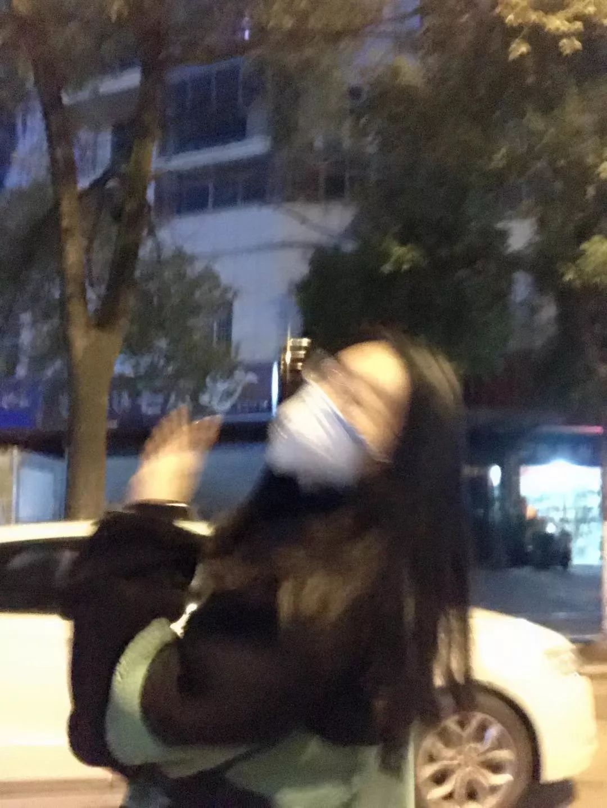
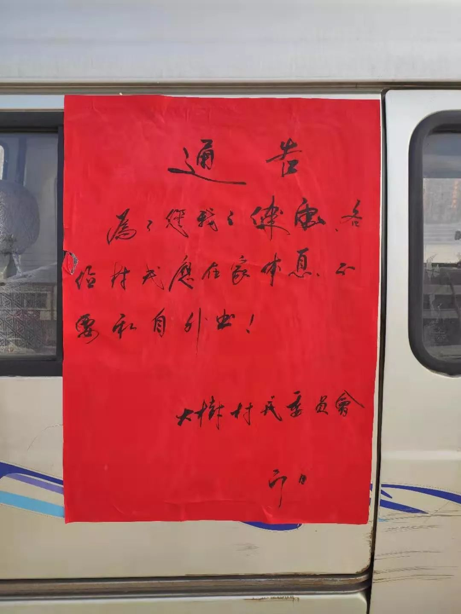
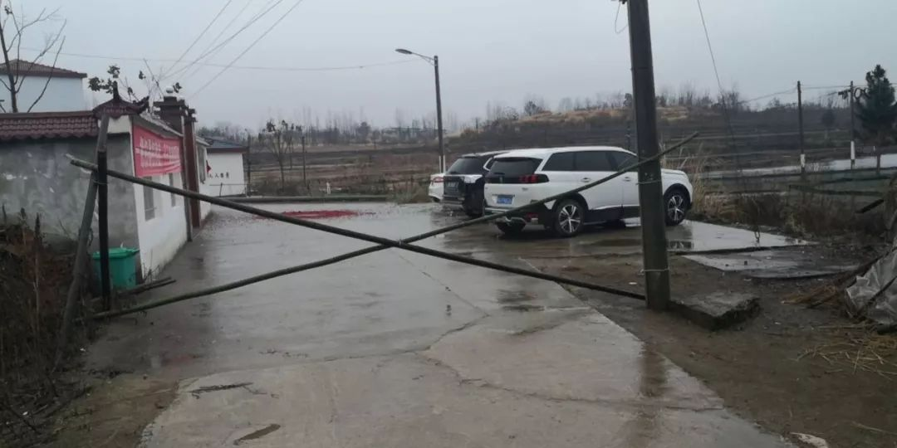
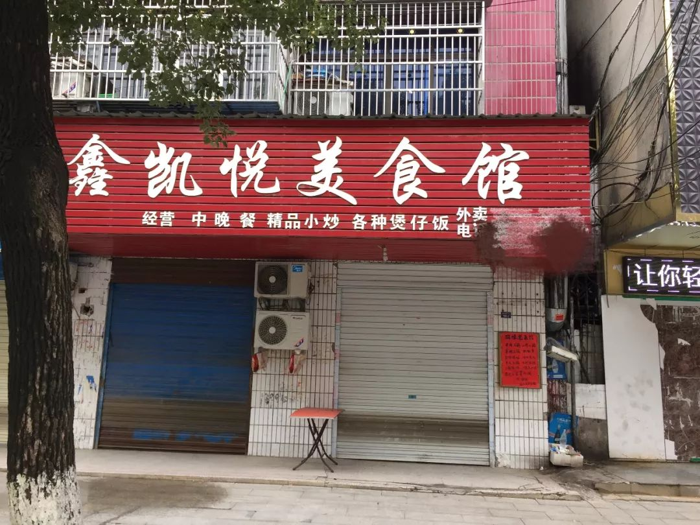
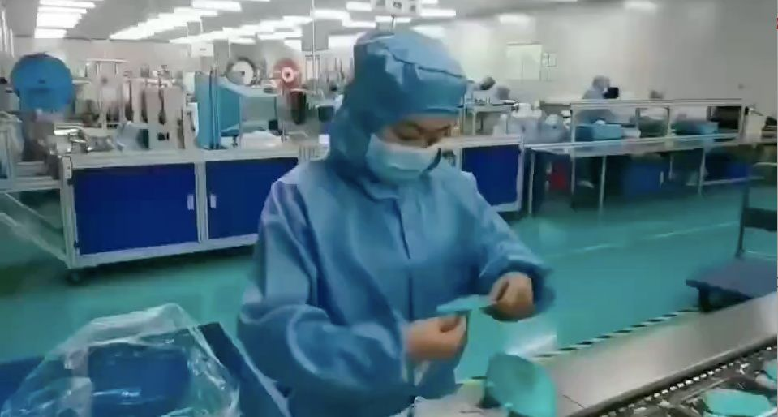

黄冈，一个武汉周边城市的疫情防控样本
原文链接 备份链接 这名医生担心疫情在黄冈下面的县市地区进一步扩散。「现在所有人都把目光放在武汉，少有人注意到周边地区。这些地区的医疗物资本来就不足，要是没人关注的话，就会变成第二个武汉。」 文｜****苏东 编辑｜**** …
“
弟弟上夜班，一上就是十二个小时，每天的口罩需求量大，一天要生产几十万只。

1月23号，在武汉宣布封城后不久，黄冈也宣布在1月24号零点封城。这座紧挨着武汉的城市，有750万人口，从前它以“黄冈密卷”闻名，这次却也遭受到了疫情的重创。
在封城期间，黄冈人的日常生活是怎样的，全民故事计划征集到一些黄冈人的生活日常，以下皆为当事人口述：
“刚吃完饭，朋友下午就确诊了”
王先生，26岁
监理工程师
家住黄冈市黄州区
1月19号，我去武汉找朋友玩，在汉正街逛了一下午。我们都没有戴口罩，也没有很在意这件事。
20号，我回到黄冈，一个武汉的朋友来黄冈找我玩。也没有戴口罩，我们一起吃了饭，还去网吧打了几局游戏。
21号上午，他返回武汉，下午开始发烧、头晕、呼吸困难。去医院检查后，确诊了，是轻度。之后就再也没有他的消息了，我打过电话，他关机。发微信也不回，应该是被完全隔离了。
我吓坏了，赶紧跟家里人说了这个事。他们也吓坏了。我把他们赶到另一个房子里去住，我就在家里一个人自我隔离。
这是第一个我没和爸妈一起度过的春节。
从22号开始，我就待在家里看看书，打打游戏，看看电影。有时连游戏都不想玩了。
我每天都很恐慌，会乱想。每隔三个小时量一次体温，每天早上起床后，把酒精洒在床上消毒，用84消毒液拖地。吃完饭后，用开水泡半个小时碗。

爸妈每天给我打电话，来送些食物和水。我住一楼，我让他们把东西直接扔进来，不要跟我碰面。
黄冈的网络监管局可能是调查过户口，查到我19号去过武汉。会经常给我打电话，提醒我不要出门。小区里的物业也每天打电话给我，提醒我按时吃药。
好在7天过去了，我既没有发烧，也没有咳嗽。一切正常，就是心理压力很大。
这期间，我出过两次门，都是开车出去，几乎没有和人接触过。是为了买酒精和84消毒液。
84每人限购两瓶，还能买到，酒精就很难买了。我就买到了一瓶，是那家药店的最后一瓶，被我抢到了。
有一次我在家里乱翻，居然找到了5瓶酒精，好像是爸妈之前买来，准备过年煮火锅用的。真是阴差阳错。我就每天拿它们来消毒了。
“现在，城里连鸟叫声都听不见”
熊小姐，24岁
空中乘务员
家住黄冈市黄州区
1月21号早上，我从成都坐飞机到武汉，再从武汉站坐城际铁路回黄冈。（从武汉站到黄冈，城铁每趟大概20分钟。）那时候我就听说武汉有疫情出现，只是没想到那么严重，也不知道黄冈有。
23号上午，武汉封城后，我才渐渐感觉到事态的严重性。武汉挺了不起的，居然用封城来阻挡疫情。紧接着当天晚上，黄冈也封城了。
24号，黄冈封城第一天，我去了趟超市，买了些粮食回家囤着。路上的行人基本都戴了口罩。封城后的几天里，我待在家里刷手机，看到确诊的数据一直在往上涨。但那都是网上的数据，还没有触及到我的生活，就感觉恐惧还在离我很遥远的地方。
后来，我妈妈跟我说，她有个朋友确诊了，还挺严重的。那个人只是去了趟中心菜场买菜，然后去麻将馆打了几局麻将。不知道具体是在哪里感染上的。这时恐惧感才一下子降临，感觉这件事已经离自己很近了。
之后的几天，我就在家里和家人打扑克，和朋友在网上打游戏。
我妈说，平时还能听到窗外的树上有鸟叫声，现在连鸟叫声都听不到了。整座城市都很安静。

我本来是28号上班的，公司通知让我停飞，先在家里休息。28号下午5点，领导通知我，从26号开始算，在家隔离15天，每天向她汇报身体状况。
我问她，隔离完之后可以上班了吗。她说还不清楚，上级没给指示，只能等进一步的通知。
其他的同事跟我说，飞机上的杯子都换成了一次性的，毛毯也不准发了，乘务员必须佩戴口罩和手套。她们在群里调侃我说，你别回来了。虽然只是开玩笑，但我听着还是挺不舒服的。
昨天晚上，我在家里实在憋不住，和妹妹一起偷偷出去遛弯。黄冈的街头空无一人。
我们走了很久，迎面碰到一个人。应该也是出来遛弯的。我没想到会碰到别人，他可能也没想到，我们都愣住了，然后不自觉地拉开了距离。
“已有志愿者感染，我还会去”
杨先生，36岁
黄冈供电公司职员
家住黄冈市黄州区
1月24号晚上，我看到消息说，政府打算征用大别山区域医疗中心，作为黄冈版的“小汤山医院”，专门治疗新型肺炎。
大别山区域医疗中心是黄冈市中心医院的新院区，主体工程和室内装修已经大部分完成，本来打算5月份开始使用，现在为了疫情，提前了。
25号凌晨，我在一些群里看到征集志愿者的消息。我想去。妻子本来是有不太赞成的，架不住我的态度坚决，最后还是同意了。
26号中午，我加了一个志愿者的群。有好几百人。群里会不定时发一些通知，说哪里需要人。想去的直接去就可以，不需要登记。

26晚上，我去了大别山医疗中心，从我家开车十几分钟到。进去之前先量体温，做的大多都是些体力活，搬病床和垃圾桶之类的。中间也会随机抽查体温。市里的饭店“虾先生”和“原始部落”自发地给我们这些志愿者免费送饭来吃。
从山东来支援的医生里，有些女医生头发太长了，防护服穿不进去。有理发师志愿者去给她们理发。
28号开始，就不再允许志愿者去大别山医疗中心了，应该是已经开始接收病人了。我们就去别的地方帮忙。
昨天下午，有人在群里说，有一个志愿者已经被确诊了。也不知道是真是假，很多人都很害怕，不愿意再去了。我还是会去的。
“我一直担心的事，并没有发生”
邓安庆 36岁
青年作家
家住黄冈市武穴市
我家在武穴。1月23日清早起来时，看到武汉封城的消息。起床后跟正在做饭的母亲说了一声，母亲不是很能理解，也不大关注。这几天一直在她耳边念叨太多疫情的事情，我感觉她都有些消化不过来了。很快黄冈市区也封城了，到了下午，我老家武穴也传出了封城的文件。
晚上，母亲来我房间聊天，我趁机放了十几个疫情的视频给她看。她认真看完，感慨道：“有多严重了哎！”
我说：“当然啊。你们在乡下看不到这些消息，外面都非常紧张了。”又说到了拜年的事情。现在头疼的是大年初一到初三的拜年。
我跟母亲说：“真希望亲戚们不要来拜年了。很多人都说了电话拜年就好了。”
母亲说：“那你也没办法说啊，很多亲戚连联系方式都没有，也就过年来一次。”我又说：“那你要戴口罩。”母亲说：“戴口罩接待客人多不礼貌。”我急了，“是面子重要，还是命重要啊。”母亲说：“你不拜年，阻止不了别人拜年。这个挡都挡不住的。”
到了24日，也就是除夕这天，我妈跟我说：“已经跟你哥说了，晚上和明天就去他家里不出来。要是有拜年客来，咱们家没有人。人家要是问起，就说去街上过了。这样别人也没话说。”
看来，天天在面前唠叨疫情的事情起了作用。现在垸里戴口罩的人明显多了起来，年轻人大部分都戴了，我妈出门也戴，还有一些老人家不信这个“邪”，不肯戴。堂哥也在家族群说不要串门了。

大年初一，从我哥哥家里回来。原本担心的串门拜年的事情没有出现，家家户户大门紧锁。大街上几无行人。超市门口有人专门检测体温。本地微信群里看到很多垸里的村干部敲锣告示不要出门拜年。
大家都是通过打电话开视频联系。戴口罩已经成为大家的共识。母亲感慨说：“这真是这辈子见过的最冷清的春节。”
“三块一包的口罩，卖到3块一个”
May24岁
在读研究生
家住黄冈市浠水县
1月19号那天，爸爸感冒了，那时候还没有铺天盖地的疫情播报。但为了不传染，我还是在家对面的药店买了一包口罩，3块钱。我爸爸戴口罩出门，街坊邻居还调侃：“感个冒你还要戴口罩啊？”
21号开始，我和弟弟就没有再出门。对面药店普通的医用口罩卖到了3块钱一个。新闻上武汉被感染的人数一天天增加，黄冈市通报有12例。我开始很焦虑，劝说家人不出门。但大街上仍然人来人往，尤其是老人和小孩，依然没有戴口罩。

23号，继武汉被封城之后，黄冈也被封了。消息传开，对面药店挤满了人，都在争相抢口罩、板蓝根、酒精等。哪怕是平时为一块钱争得面红耳赤的老爷爷，这时候也愿意花60块钱去买一包。
从那天起，街上走动的人就越来越少，各家各户都在囤粮。大年初一那天，村与村、镇与镇之间的路都被封掉了。街上一个人没有。由于是乡镇医院，没有完善的医疗设施，有疑似患者都只能往县城的医院送。物资短缺也使医生只能穿最普通的防护服和口罩，护士朋友要去市区医院都没有车可以接送。
这几天的清晨，每天都有社区广播在街上宣传，但陆陆续续又有人开始在街上游荡。
“基层公务员，每天都在岗位上”
曼，24岁
公务员
家住黄冈市麻城市
我知道“新型冠状病毒肺炎”是在1月21日，单位开了一个大型会议，在此之前因为工作忙或者是因为我主动屏蔽跟自己无关信息的原因，根本就不知道这事。
那次会上布置的工作任务不止这一件，但我唯一记得的就是我们辖区的卫生服务中心负责人在会上给我们现场演示了“六步洗手法”。
24号（除夕）上午11点，麻城实行交通管制，客运站停运。工作群里一直有领导转发的各级防疫指挥部以“特级”“特提”标记的文件。我也才意识到事情的严重性，也没什么心情看春晚，看就连临时安排的防疫特别节目也没看。
在这段时间，单位的最高领导和相关责任人都没有放假。（这里的相关责任人指的是辖区村里结对的本单位中层领导、卫生服务中心干部、派出所干部、各村和社区的干部。）
除夕夜，他们也在坚守岗位，将防疫宣传单送给居民，用扩音喇叭全区巡逻宣传，摸排返乡人员登记造册等。
从初一到初五，各相关部门和相关人员主要负责持续宣传、做好区域内的消毒杀毒、投放回收废弃口罩专用垃圾箱等工作，而我临时被征用为宣传员，负责防疫工作的宣传报道，不参与具体事务。
这让我觉得自己也算为单位出了些力，很感谢和尊敬那些在一线战斗的人，医护、志愿者等等，当然还有这些基层工作人员。
今天初五，天气不错，查了一下天气预报，最近几天都不错，随手涂鸦了一朵花。

“外面在放烟花，好像哭声”
Wang，25岁
在读研究生
家住黄冈市蕲春县
直到1月23日，我突然听说武汉要封城了。我才想起来要买口罩。
我带着另一半出门，选了最近的一个大药房，问店里的老板娘有没有医用口罩，没等我们说完，她就说没有了。我连忙又问了一遍能不能帮我们找找，一个大夫从角落里翻了翻，“只剩一包了。”
县里的口罩早卖光了，好在一包里面有二十个，我当时觉得自己不在武汉，这些应该够用了。
然而疫情的发展远远超出了我们的预料。继武汉封城后，黄冈也宣布封城，就连我们这个小县城也开始限制人口进出，而最令人担心的事情发生了，蕲春县出现了十几例感染，县医院宣布告急。
除夕那晚，外面在下雨，烟花爆竹比往年少很多，听着那些烟花燃放的声音，我跟高中同学说：“外面在放烟花，好像哭声。”
大年初一，我正准备午饭，街上开始有政府宣传车吹着喇叭喊着什么，我以为是县领导提醒市民注意防控病毒，赶紧放下手中的活凑到窗户那听，结果是他们反复播着要抓昨晚违反禁鞭令的消息。

我感到失望和气愤，以前学医的同学在朋友圈里一遍一遍呼吁着为县医院捐赠物资：医生连最基本的口罩和隔离服都不够，护士没有护目镜和防护服……我能做的也只有捐款和转发那些需要支援的消息。
在小县城里，老年人和长辈居多，这几天开始弥漫着烧艾草的气味。
由于连续一周多的阴雨天，街上没有什么人。大年初五，天气放晴，我爸上午出门去倒垃圾，回来跟我们说：太阳出来后，大家憋不住，都出门逛街了。
没一会儿，区委会有人敲门开始查武汉回乡人口，“你家有没有人从武汉回来的？”老爸开门回应：“没有，我们一直都在家，没出门。”那人拍了一张照片去问下一家了。
“弟弟在工厂加班，生产口罩”
空谷幽兰，25岁
教师
家住湖北省团风县
我家在团风，五天前，新型冠状病毒的危害性似乎还没有被人意识到，直到接二连三的封城消息，才使人们开始重视起来。
1月24日除夕，以往这一天是最热闹的，而大家都在疯狂地购买口罩和消毒用品，我住在小乡镇，这些东西早已抢购一空。
人们一边感叹这年实在没有年味，但仍有一大批人甚至从武汉回来的人聚集在一起聊天打牌。
今年是我们一家四口第一次没有聚齐的春节。远在黄州的弟弟，因为回家的路被封，没车回来。
弟弟是个沉默的男孩，2019年刚过20岁生日。他所从事的工作是在黄冈某公司口罩车间，他本可以赶在黄冈封城前赶回来，由于疫情突发，口罩紧缺，他没有口罩，就留在了那里。

车间里很多工人早就回家，准备与家人团聚过年，他一个人住在寝室里过着冷清的春节。
由于年轻，弟弟被分到上夜班，一上大概就是十二个小时，每天的口罩需求量大，一天要生产几十万只。只在除夕那天，他们才休息了一天，其它几天都在加班。
本来说，弟弟可以初四放假，现在依然在加班工作，父母每天打电话给他，担心他又怕打扰他休息。
家里准备好了食物等他回来，一家人在一起才算过年。
征 集
我们想通过全民故事计划这个平台，让大家了解湖北每个地区：武汉、黄冈、鄂州、黄石、孝感、襄阳、荆州、荆门、随州、咸宁、十堰、宜昌、恩施州、天门、仙桃、潜江、神农架林区，每个县、每个村镇的真实日常。
在湖北的你，可以将你的经历告诉我们。
无论是一段话还是一张图片，都可以在全民故事计划的公众号后台，直接发送给我们。
希望这次，我们能够一起渡过这一难关。
撰文 | 李星锐 李泽
编辑 | 蒲末释
▼
全民故事计划正在寻找每一个有故事的人
讲出你在乎的故事，投递给
tougao@quanmingushi.com
故事一经发布，即奉上千字300元-1000元的稿酬

请您支持一下全民故事计划，点击在看
文章已于修改
原文链接 备份链接 这名医生担心疫情在黄冈下面的县市地区进一步扩散。「现在所有人都把目光放在武汉，少有人注意到周边地区。这些地区的医疗物资本来就不足，要是没人关注的话，就会变成第二个武汉。」 文｜****苏东 编辑｜**** …
原文链接 备份链接 数据来源：新浪武汉肺炎疫情实时追踪 截至1月29日7时， 全国新型肺炎个案确诊5515例， 目前患者数字仍呈现上升趋势。 （画面来源：林晨同学Hearing） 武汉成为全球新闻的焦点。 和许多医护人员一样， 各大媒 …
原文链接 备份链接 大家好，我是田静。 这几天因为新型冠状肺炎病毒，我恶补了一些相关书籍，再看网上真假难辨的信息，觉得阿尔贝‧加缪的《鼠疫》中说得很对：“我们每个人心里都有瘟疫，没有一个人，这世界上没有一个人是免除得了的。能够对抗瘟疫的， …
原文链接 备份链接 作者 | 薛芳 孙宏超 相欣 安然 马关夏 李越 编辑 | 康晓 出品｜深网·腾讯小满工作室 欢迎下载腾讯新闻APP，阅读更多优质资讯 平平安安就是年。 突袭而至的新病毒能阻止很多中国人在这个春节里团聚，但没有什么能阻 …
原文链接 备份链接 图源B站UP主林晨同学自制视频 九位在武汉度过了除夕夜的普通人，他们从事着不同的职业，拥有不同的人生经历，但都在这座城市度过了可能是人生中最难忘的一个除夕。他们讲述的，不只是一个简单的夜晚，而是一场大疫之下，一个个普通 …